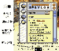

|
|
| 当前位置：电脑报电子版 > 1999 年 > 47 期 > 软件世界 > 英语学习好帮手——英语词典Babylon |
| 《 英语学习好帮手——英语词典Babylon 》 |
| 很多学英语的朋友，都希望能拥有一本有英文解释的英语辞典，一般的英文词典都是大部头，满眼的英文，不免让人看了头大，而且查起来也不方便。现在，我们可以使用Babylon电子英文词典。它功能强大，使用方便，界面友好，应该成为学英语的朋友们的首选。下面就让我来介绍一下吧。
1软件的安装 Babylon安装十分简便，界面是标准的Windows风格，只是在安装的最后要填一下个人信息，并且选择程序的激活方式是鼠标右键还是“Shift＋鼠标右键”。如果你使用三键鼠标还可以选择中间键。2软件的使用与设置  运行Babylon后，系统栏就显示了Babylon的图标。左键单击图标，可以暂时停止Babylon的使用，右键单击可以调出设置菜单进行设置。Babylon的使用和《金山词霸》有些差别，用鼠标指到屏幕上的某个英文单词，然后激活Babylon，例如：如果你设置的是“右键单击”激活，单击鼠标右键，就可出现该单词的英语解释，主界面如图。界面中的主要部分就是该单词的英文解释。解释非常详细，可以说超过很多的词典。如果你还对解释英文中的某个单词不太了解的话，你只需单击该词，即可获得该词的解释，真可谓“打破沙锅问到底”。 在Babylon的解释窗口中，还有一些工具按钮，你可以通过这些这些按钮设置Babylon、访问相关网页等，具体含义可以参考图示。 Babylon还提供了搜索引擎，可以通过菜单“Configure”中的“Web Site”项进行设置。Babylon安装后系统默认是开机时启动，这无疑加重了系统的负担，你可以在打开“Configure/General”菜单项，将“Launch Babylon on Windows StartUp”这项去掉，就可以免掉开机自动启动，当要使用的时候再手动启动程序即可。 另外，在个别情况下，如果Babylon实在无法在屏幕中抓词，你也可以在空白处激活Babylon，程序会提示你手动输入单词，按提示输入单词即可得到该单词的解释。 怎么样，是不是心动了？快行动吧！该软件主页地址http:∥wwwbabyloncom。 (江苏 王睿) |
| 下载本期推荐软件 | 页 首 |
| 《电脑报》版权所有，电脑报网站编辑部设计制作发布 |